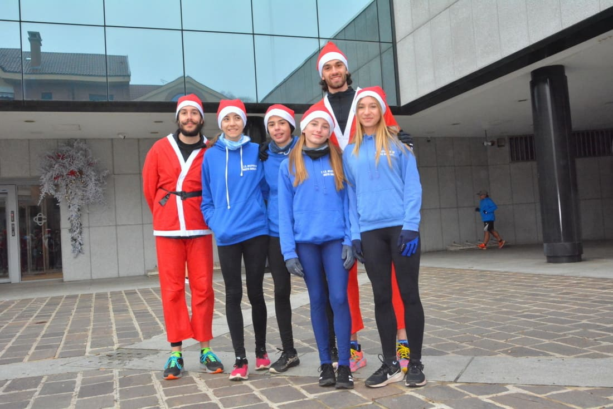
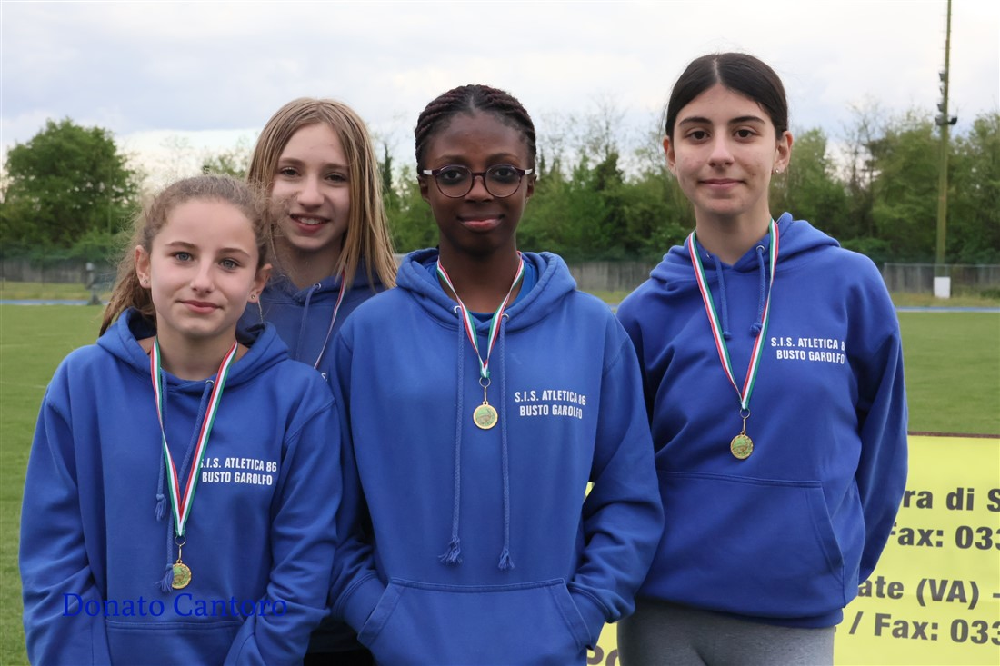
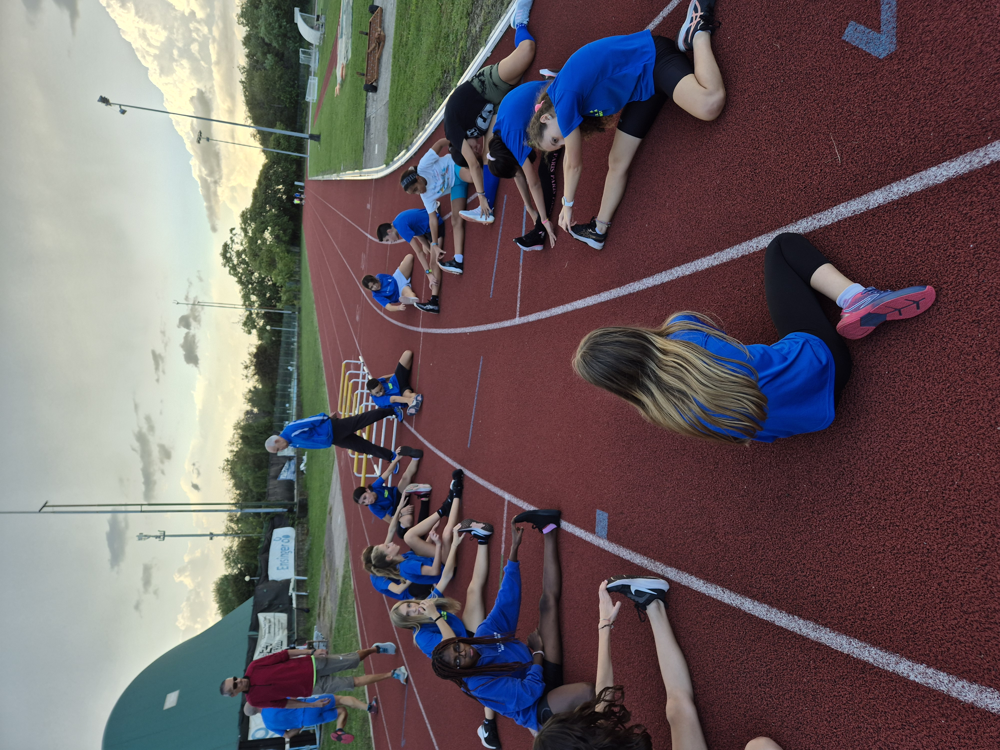
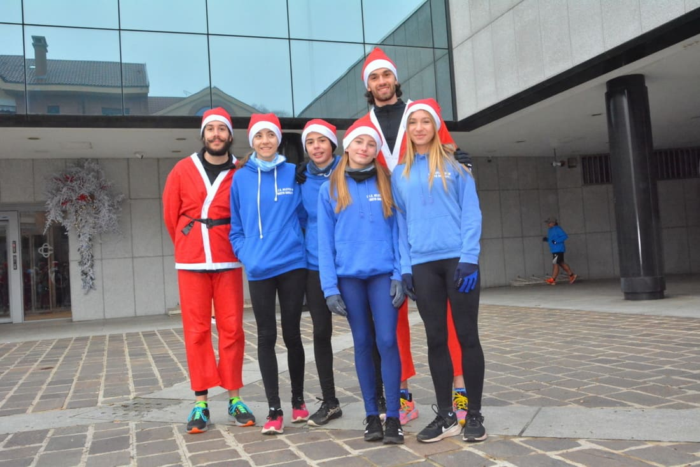
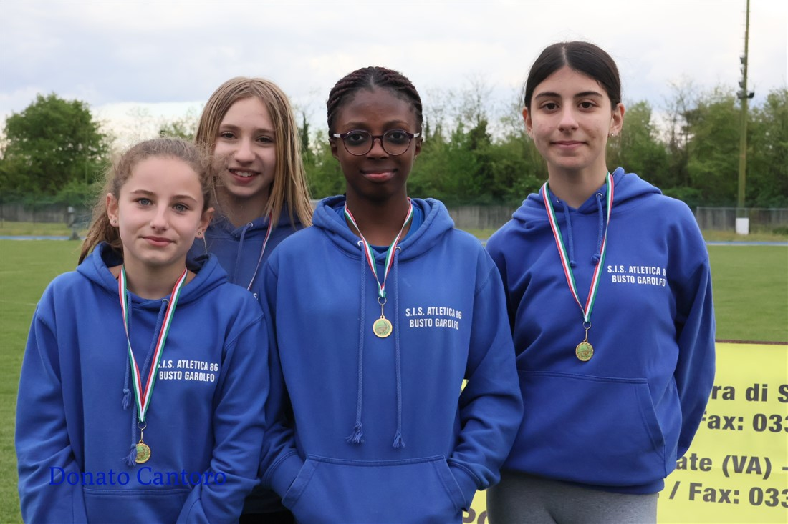
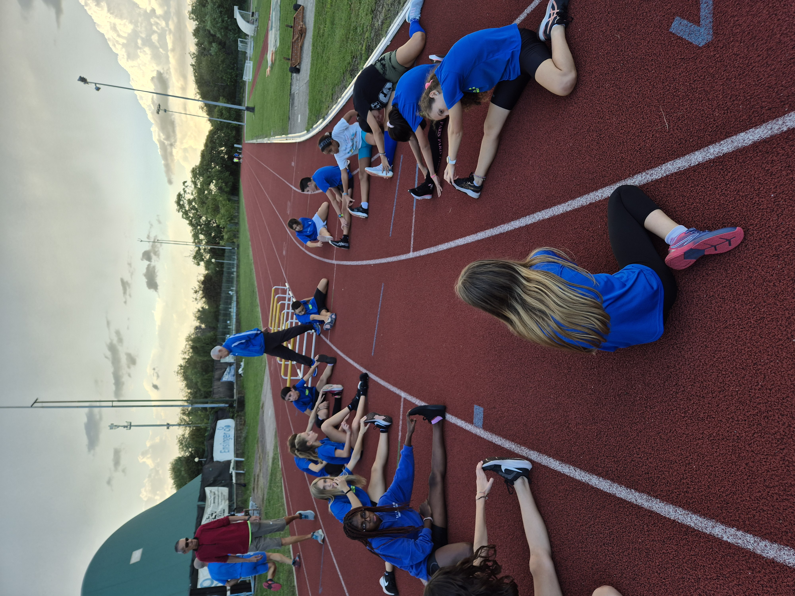

Chi siamo
Associazione sportiva dilettantistica S.I.S. Atletica 86 - Busto Garolfo
Ci occupiamo della promozione dell’atletica leggera in tutte le sue forme, offrendo un ambiente formativo e stimolante per bambini, ragazzi e adulti.
Attraverso un percorso graduale, accompagniamo gli atleti nella scoperta delle diverse discipline dell’atletica, con l’obiettivo di sviluppare le capacità motorie, la passione per lo sport e, per chi lo desidera, la preparazione all’attività agonistica.
Organizziamo allenamenti strutturati, attività ludico-sportive e occasioni di crescita sportiva che valorizzano l’impegno, la costanza e lo spirito di squadra.
Orari:
Lunedì – Mercoledì – Venerdì dalle 17.00 alle 19.15
Dove ci trovi:
Ti aspettiamo presso la nuova pista di atletica al campo sportivo comunale “Roberto Battaglia” di Busto Garolfo o nella adiacente palestra delle scuole medie Caccia.
Via Benvenuto Cellini 22, Busto Garolfo (MI) 20038
 







Informazioni
Attività ludica di avviamento all’atletica leggera
- Esordienti (8/9/10 anni)
Attività a carattere ludico di avviamento all’atletica leggera che offre un’opportunità entusiasmante ai più piccoli per appassionarsi al mondo dello sport divertendosi.
Lunedì e mercoledì dalle 17.30 alle 18.30
Costo annuale: 190€, comprensivo di tesseramento (FIDAL) e maglietta della società.
Sconto fratelli: 95€
Allenamenti in preparazione all’attività agonistica
- Ragazzi/e (11/12 anni)
- Cadetti/e (13/14 anni)
- Categorie assolute (15+ anni)
Attività che ti permette di scoprire tutto il tuo potenziale, sviluppare le tue abilità atletiche e partecipare ad emozionanti competizioni in un ambiente accogliente e motivante.
Lunedì, mercoledì e venerdì dalle 17.30 alle 19.15
Costo annuale: 190€, comprensivo di tesseramento (FIDAL) e maglietta della società.
Sconto fratelli: 95€
Attività Master
Allenamenti guidati con possibilità di tabelle personalizzate.
Per podisti amatoriali che praticano attività agonistica e non.
Lunedì, mercoledì e venerdì dalle 17.30 alle 19.15
Costo annuale: 95€, comprensivo di tesseramento (FIDAL) e maglietta della società.
Modulistica
Safeguarding
Informazioni sulla tutela dei minori:
Responsabile: Nardo Stefano
Email: safeguarding.atletica86@gmail.com
Contatti
Email: MI354@fidal.it
Telefono: 329 387 5039
Seguici su Instagram
 @s.i.s_atletica86
@s.i.s_atletica86